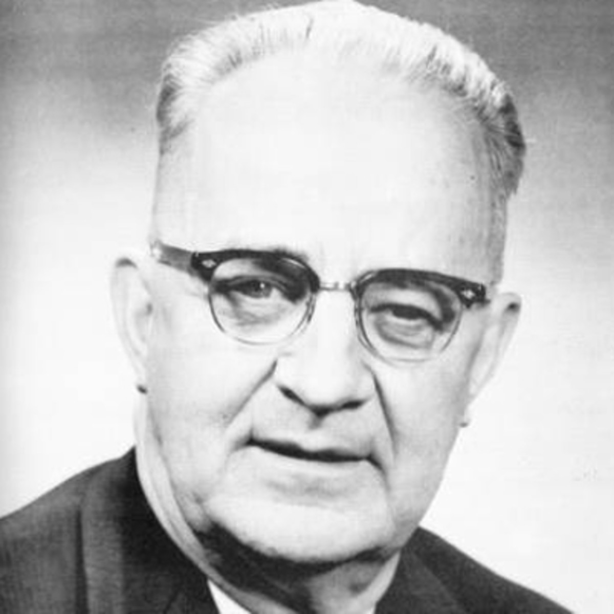

Eugene "Bull" Connor

bplonline.cdmhost.com/digital/collection
"Eugene 'Bull' Connor, [is] a racist who pride[s] himself on knowing how to handle the Negro and keep him in his 'place'" (47).
He worked hard to oppress black people in Birmingham and was one of greatest adversaries to the movement. His violence knew no end. Any man, woman, or child that opposed him could be subjected to his wrath. He ignored the actions of the KKK. Bull Connor even called for attack dogs against protesters, some of which were children. Threatening civillians who did not bend to his will did not make him feel uneasy either. Thankfully, the man is out of office now. What hate must fill your heart for this to happen? Why is it that men like this so strongly oppose giving fundemental human rights to people of another color? The wish for power and control over others corrupted him.
Here is a biography that details Mr. Connor's life and his racist actions.
Biography
Return